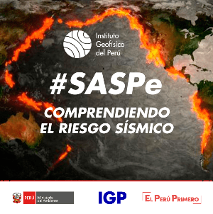

Currently working at Los Alamos National Laboratory (LANL).
E3WS is a transferable AI algorithm for earthquake early warning, currently powering Peru's SASPe system. It estimates earthquake parameters from the first 3 seconds of single-station records using machine learning, enabling rapid decisions before damaging waves arrive.
View E3WS GitHubPeru currently uses E3WS through SASPe, benefiting more than 18 million people. Beyond Peru, E3WS has also been applied in scientific articles and dissertations involving Colombia and Haiti, showing that the algorithm can support earthquake early warning research and deployment in seismic regions worldwide.
The work is designed for high-consequence environments where seconds matter, with an emphasis on reliable deployment, open-source reproducibility, and disaster risk reduction.
I am a Research Scientist and Postdoctoral Researcher at Los Alamos National Laboratory (LANL) in Los Alamos, New Mexico. I hold a PhD in Earth and Universe Sciences and build machine learning systems for earthquake detection, rapid source characterization, and early warning. My work connects peer-reviewed science, operational deployment, and public impact: algorithms developed during my PhD are part of Peru's earthquake early warning effort, serving a population of more than 18 million people.
Selected media coverage and institutional recognition for AI-based earthquake early warning and global seismic resilience.
Real reported case showing the alert behavior of E3WS during an earthquake near Ica, Peru. The case was reported publicly by Facebook user Victor Pachas.
View reporter profilePeru's leading newspaper on how artificial intelligence can strengthen earthquake early warning.
Official Newspaper El PeruanoGovernment newspaper coverage of AI as a tool to reinforce seismic alert capability.
Television Panamericana TelevisionNational TV coverage of E3WS and the use of the first 3 seconds of seismic records for rapid warning decisions.
News Agency Agencia AndinaEnglish-language coverage of IGP's use of AI in Peru's seismic alert system.
Radio Radio NacionalPublic radio coverage explaining how early alerts can be reinforced with artificial intelligence.
Institutional Recognition Geoazur / IRDRecognition from the Observatoire de la Cote d'Azur and Geoazur for the 2024 IRD Innovation Trophy.
Recognized for the distinctive capability of E3WS, an AI-based earthquake early warning algorithm designed to operate with both high-cost and low-cost seismic sensors.
E3WS can be applied in seismic regions around the world and is designed for exceptional speed and effectiveness: it uses the first seconds of seismic records to support some of the fastest warning decisions currently possible.
Pitch segment from 15:19 to 18:42 presenting E3WS as an AI-based earthquake early warning method designed to convert the first seconds of seismic data into rapid public-safety decisions. The embedded player requests YouTube's automatic English captions.
English translation: E3WS uses artificial intelligence to analyze the first 3 seconds of seismic records, detect earthquakes rapidly, and estimate their magnitude and location so warning systems can make faster public-safety decisions before strong shaking arrives.
Scientific machine learning for earthquake seismology, rapid source characterization, and scalable research software in Los Alamos, New Mexico.
Developed AI-based earthquake early warning algorithms for SASPe and E3WS, including real-time detection, P-wave picking, magnitude estimation, and hypocentral parameter estimation.
Built real-time monitoring systems for the Peruvian national seismic and accelerometric network, including server watchdogs, ShakeMap workflows, and operational seismic infrastructure.
Check out: Ph.D. Thesis.
Check out: Master Dissertation.
Check out: Electronic Engineering Thesis.

SASPe is Peru's national Earthquake Early Warning System: a service for monitoring, warning, dissemination, and communication, designed to alert seconds before urban areas are shaken by seismic waves. Its core algorithmic component is E3WS.
View ProjectOpen-source scientific software for machine-learning-based earthquake early warning from the first seconds of seismic records. E3WS currently powers Peru's SASPe system and is designed for reproducible research, real-time deployment, and adaptation to seismic regions worldwide.
View GitHub